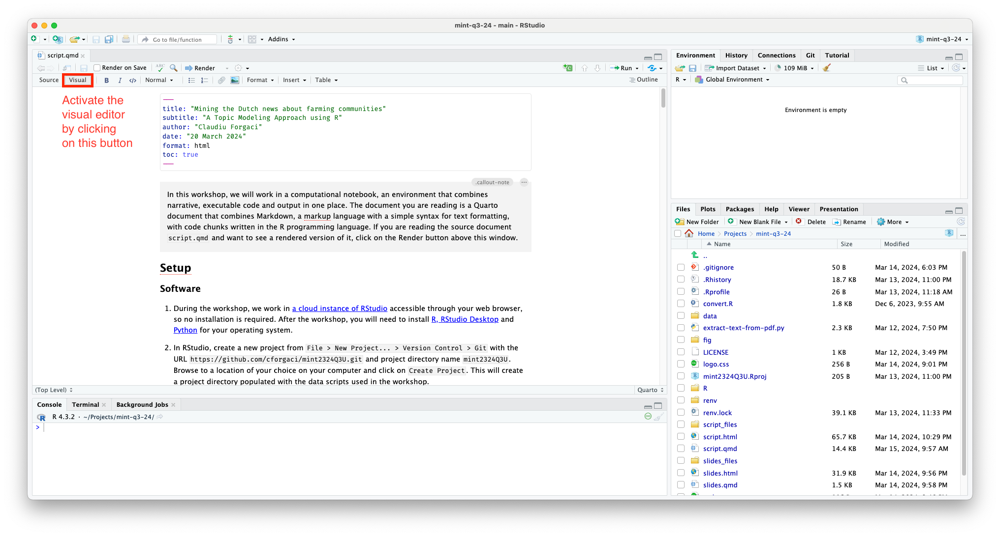

![]()
# if (!"renv" %in% installed.packages()) install.packages("renv")
# renv::restore(prompt = FALSE)What do Facebook or X users say about farming in the Netherlands?
Word cloud analysis using R
Note
In this workshop, we work in a computational notebook, an environment that combines narrative, executable code and output in one place. The document you are reading is a Quarto document that combines Markdown, a markup language with a simple syntax for text formatting, with code chunks written in the R programming language. If you are reading the source document script_socialmedia.qmd and want to see a rendered version in your browser, click on the Render button above this window.
Setup
Software for data collection
During the workshop, we work with Web Data Research Assistant for scraping Facebook and X data. Web Data Research Assistant is a web browser extension allowing you to scrape data from the web, in particular from Twitter, Facebook, Google (does not work for Google Maps), and Instagram.
Make sure you are using Google Chrome as your web browser. If you don’t have it, download and install it from here.
Install the Web Data Reseach Assistant extension from here.
In Chrome, go to Facebook or X and search for keywords you are interested in, then press Shift+Ctrl+A to activate the data gathering process.
Press Shift+Ctrl+H to halt the data gathering process and stop the browser scrolling. You will be prompted to save a
WebDataRE.htmlfile.
Open the
WebDataRE.html, select the data in the table (including the column headers), open a new Excel file and paste the copied data into it.
Software for analysing data
During the workshop, we work in RStudio Server, a version of RStudio that is accessible through your web browser, so no installation is required. Visit RStudio Server and log in with the credentials provided in your handout. To follow the steps described in this document after the workshop, you will need to install R, RStudio Desktop and Python for your operating system.
In RStudio, create a new project from
File > New Project... > Version Control > Gitwith the URLhttps://github.com/cforgaci/mint2324Q3U.gitand project directory namemint2324Q3U. Browse to a location of your choice on your computer and click onCreate Project. This will create a project directory populated with the data scripts used in the workshop.Open
script_socialmedia.qmd. This will bring you to the computational notebook from where this document was rendered. Activate the visual editor and continue reading there. For our analysis, we will need to load a number of R packages that extend the out-of-the-box functionality of R. Run the
setupcode chunk below by pressing on the green arrow in its upper right corner.
- If you are running this script in RStudio Desktop, you will need to first run the
installcode below, by deleting the two#signs and running the code chunk. It will take a few of minutes until all packages are installed.
- Run this code to load the packages we will use in this document
library(tidyverse) # Data manipulation and visualisation
library(tidytext) # Text manipulation
library(wordcloud) # Generate word clouds
require(reshape2) # wordcloud dependency
library(readxl) # Read Excel files in R
library(stopwords) # Provides stopwords lists for multiple languages
library(tm) # Create and manipulate corporaIntroduction
In this workshop, we will use word clouds to reveal top keywords in the Facebook or X about farmer communities.
The dataset
We will do this together on a given dataset: two data frames of Excel files which generated by Web Data Research Assistant and translated by Google. The one is from Facebook and another is from X. In this instruction, we will work with data frames of social media X. After that, you will run the analysis in this document on a dataset of your choice. Run the following code chunk with the default value.
# What data will you work with? Use one of the following two values:
# - "facebook_x" if you want to use the default dataset
# - "mydata" if you want to use your own dataset
data_choice <- "facebook_x"Text analysis
Read the Excel files of facebook or X in R. We use an Excel file with X data as an example.
# read the excel data from folder, using data from x for example
data_root <- paste0("data/", data_choice, "/", "x#boeren_nederland_EN.xlsx")
fsq <- read_excel(data_root)At this step, we define a list of stop words that occur in high frequency across the entire set of documents and are not expected to add meaning to the topics.
stopwords_vec <- stopwords()
custom_stopwords_vec <- c("https", "twitter", "x", "also", "think", "must", "know", "many", "much", "like", "everything", "really", "want","without", "going", "good", "something", "farmers", "netherlands", "nthe" )We choose the column of text information, split the entire corpus into words and filter them with some rules…
fsq_words <- fsq %>%
unnest_tokens(output = token, input = Text) %>% # Decide which text information in which columns you want to analyze, and input = "name of column"
filter(!token %in% stopwords_vec) %>% # Remove English stop words
filter(!token %in% custom_stopwords_vec) %>% # Remove custom stop words
filter(!str_detect(token, "[0-9]")) %>% # Remove numbers
filter(nchar(token) > 3) # Remove words of max. 3 characters… and have a quick look at the most frequently used words. We can see frequently used words such as “people”, “food”, and “policy” “right” indicating different areas of concern present in social media posts. Note that we have 1609 rows, each representing one distinct word. This is the vocabulary we will provide as input to the word cloud.
# Count the token frequency
fsq_words %>%
count(token) %>%
arrange(desc(n))# A tibble: 1,609 × 2
token n
<chr> <int>
1 will 35
2 people 32
3 food 26
4 dutch 25
5 farmer 19
6 nature 18
7 policy 15
8 companies 14
9 meat 14
10 right 12
# ℹ 1,599 more rowsWe select top 100 words and make a word cloud
# Select top 100 words
fsq_words_top100 <- fsq_words %>%
count(token) %>%
slice_max(n, n = 100)
# Generate a word cloud with the filtered data
wordcloud(words = fsq_words_top100$token, freq = fsq_words_top100$n,
colors = rainbow(length(fsq_words_top100$token)), scale=c(3, 0.2))Now it’s your turn!
Exercise: Visualising scraped data
You’ve been scraping data throughout the workshop. Now it is time to visualise it.
In the
Filestab of RStudio, click onUpload. Navigate to the target directory~/mint2324Q3U/data/facebook_x, click onChoose Fileto select the Excel file with your scraped data and click onOK.On line 102 of this script, replace
x#boeren_nederland_EN.xlsxwith the name of your uploaded file.Follow the steps of the web scraping tutorial above to visualise your social media data in a word cloud.
What do you see? How would you describe the discourse of/about farming communities on social media?
Citation
BibTeX citation:
@report{zhang2024,
author = {Zhang, Shuyu and Forgaci, Claudiu},
publisher = {TU Delft},
title = {What Do {Facebook} or {X} Users Say about Farming in the
{Netherlands?}},
date = {2024-03-20},
langid = {en}
}
For attribution, please cite this work as:
Zhang, S., & Forgaci, C. (2024). What do Facebook or X users say
about farming in the Netherlands? TU Delft.